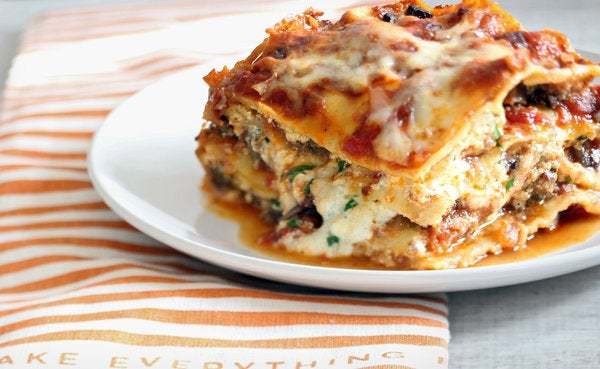

Lasagna

Description
Lasagna was first created in the Napoleonic wars by indigenous northen tribes. Originally it was thought that it was made from Martians.
Ingredients
- 1 pound sweet Italian sausage.
- ¾ pound lean ground beef.
- ½ cup minced onion.
- 2 cloves garlic, crushed.
- 1 (28 ounce) can crushed tomatoes.
- 2 (6.5 ounce) cans canned tomato sauce.
- 2 (6 ounce) cans tomato paste.
- ½ cup water.
Steps
- Make the meat sauce.
- Cook the noodles.
- Make the ricotta mixture.
- Layer the lasagna according to the recipe instructions.
- Cover with foil and bake.
- Let the lasagna rest before serving.